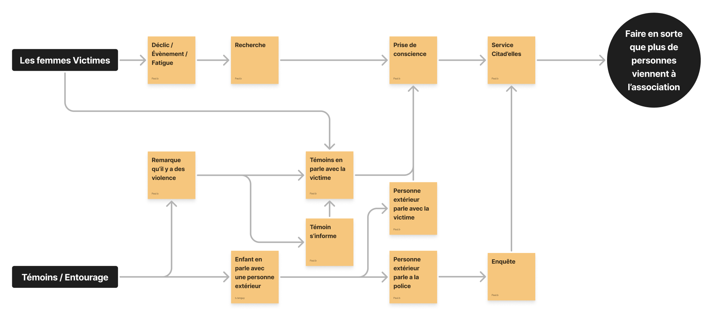
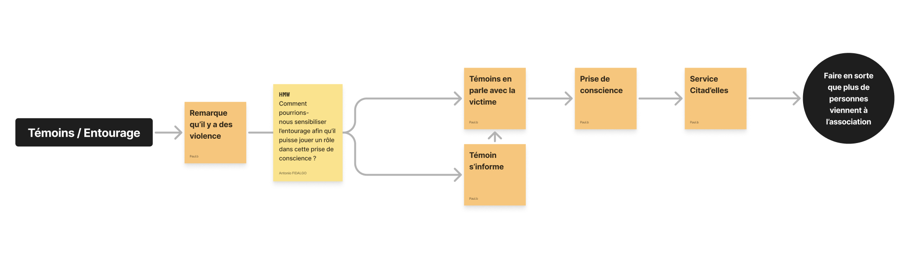
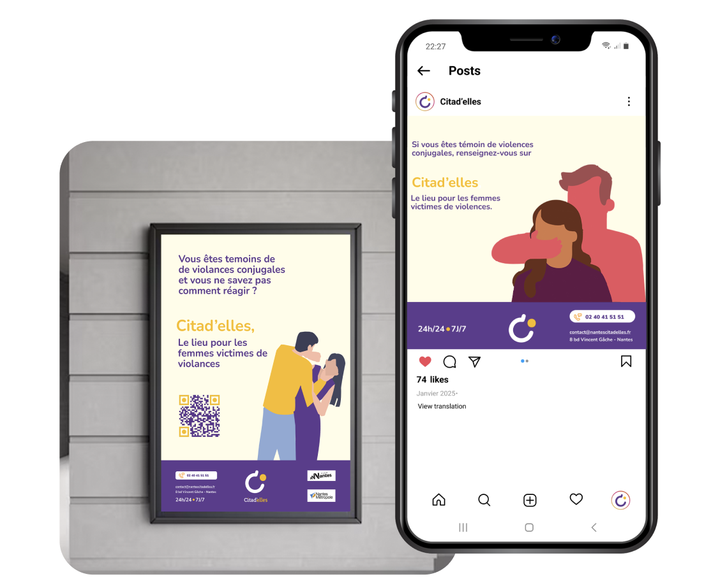
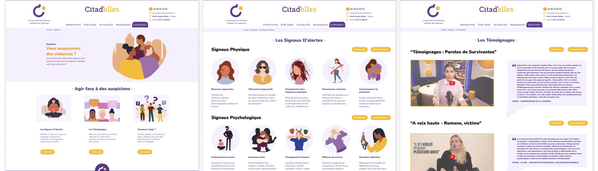
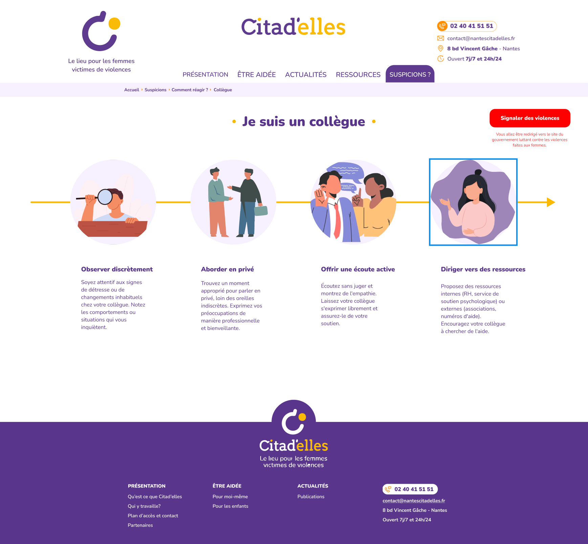

Citad'elles
Un projet au cœur du secteur associatif
Citad'elles est une association qui intervient auprès de publics vulnérables. Dans le cadre d'un projet de design de service, l'objectif n'était pas de créer une application, mais de repenser entièrement l'expérience d'accueil et d'accompagnement au sein de leurs structures physiques.
Le défi principal consistait à aligner les processus internes des bénévoles avec les besoins émotionnels et pratiques des bénéficiaires, pour créer un parcours fluide et rassurant dès le premier contact.
La question centrale
" Comment fluidifier un parcours d'assistance complexe, impliquant de multiples interlocuteurs, pour réduire le stress cognitif des usagers dès leur franchissement de la porte ? "
Les bénéficiaires arrivaient dans un environnement qui leur était inconnu, avec peu de repères visuels et organisationnels. Les bénévoles, de leur côté, manquaient d'outils communs pour synchroniser leurs actions et offrir un accueil cohérent.
Les défis à adresser
Stress cognitif à l'entrée
Réduire la charge mentale des bénéficiaires dès leur arrivée en rendant les étapes du parcours lisibles et prévisibles.
Coordination des bénévoles
Synchroniser les actions back-stage (organisation interne) avec le front-stage (accueil visible) pour garantir un service homogène.
Signalétique & repères visuels
Créer un système de communication visuelle qui guide sans infantiliser, respectant la dignité des personnes accompagnées.
Pérennité du service
Proposer des solutions adoptables par une équipe de bénévoles non-formés au design, avec des ressources associatives limitées.
" Ce qui se passe en coulisse détermine entièrement la qualité de l'accueil visible. "
Comprendre avant de transformer
Immersion & observations terrain
Des sessions d'observation en situation réelle au sein de la structure pour identifier les frictions visibles et invisibles du parcours d'accueil, du point de vue des bénéficiaires comme des bénévoles.

Cartographie du parcours
Modélisation de l'intégralité du parcours d'accueil via un Service Blueprint : actions visibles (front-stage), processus internes (back-stage), points de contact et moments de tension identifiés.

Conception des écrans
Conception des écrans et des illustrations en reprenant la charte graphique de Citadelles, pour assurer une cohérence visuelle avec l'identité existante de l'association.
Un système visuel pour humaniser l'accueil
Les solutions ont émergé de l'intersection entre les besoins des bénéficiaires et les capacités opérationnelles de l'association. L'objectif : des réponses concrètes, sobres et implémentables sans budget important.
Signalétique & affiches d'orientation
Un système d'affiches conçu pour baliser le parcours dès l'entrée : indiquer les étapes, rassurer sur la suite, et donner des repères visuels clairs à chaque point de contact de la structure.

Interface de suivi bénévoles
Un outil numérique léger pour coordonner les actions des bénévoles en temps réel, synchroniser le back-stage et améliorer la fluidité du service rendu en front-stage.


Ce que ce projet m'a appris
- — Le design de service exige une lecture simultanée du front-stage et du back-stage : ce qui se passe en coulisse détermine la qualité de l'accueil visible.
- — Dans un contexte associatif, la co-conception n'est pas une méthode parmi d'autres — c'est la seule façon de produire des solutions réellement adoptées.
- — Concevoir pour des publics vulnérables demande une attention particulière à la dignité et à l'autonomie : chaque choix graphique et éditorial porte une intention.